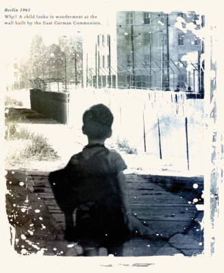

返回主页
Berlin (8)

Berlin (1)
黄家驹（Beyond）
AMANI
Amani Nakupenda Nakupenda We We
他主宰世上一切
他的歌唱出爱
他的真理遍布这地球
他怎么一去不返
他可否会感到烽烟掩盖天空与未来
无助与冰冻的眼睛
流泪看天际带悲愤
是控诉战争到最后伤痛是儿童
我向世界呼叫
Amani Nakupenda Nakupenda We We
Tuna Taka We We
Amani Nakupenda Nakupenda We We
天
天空可见飞鸟
惊慌展翅飞舞
穿梭天际只想觅自由
心
千亿颗爱心碎
今天一切厄困
仿佛真理消失在地球
无助与冰冻的眼睛
流泪看天际带悲愤
是控诉战争到最后伤痛是儿童
我向世界呼叫
Amani Nakupenda Nakupenda We We
Tuna Taka We We
Amani Nakupenda Nakupenda We We
权力与拥有的斗争
愚昧与偏见的争斗
若这两者争到最后怎会是和平
我向世界呼叫
Amani Nakupenda Nakupenda We We
Tuna Taka We We
AMANI=和平
NAKUPENDA=爱
NAKUPENDA WE WE=我们爱你
TUNA TAKA WE WE=我们需要你
CIA Report
version:1.0; jobnet@188.com © retter2012.com